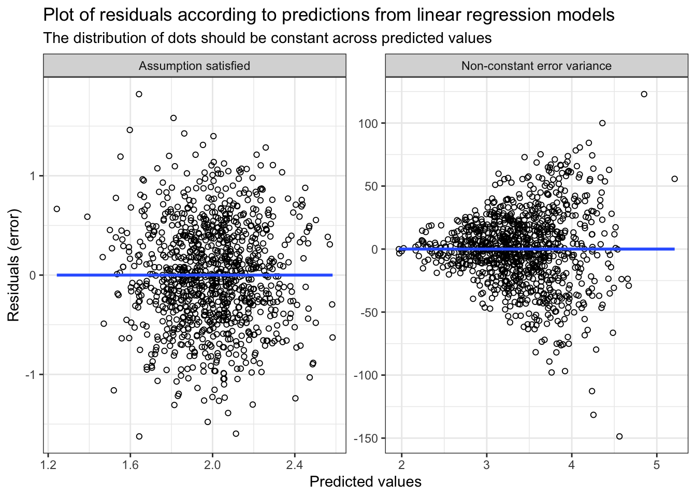

| Assumption | Description | Verifications | Solution |
|---|---|---|---|
| Independence | Observations or individuals should be independent | Study design | Use a hierarchical, mixed or random effects model instead of traditional model |
| Normality | Model errors/residuals follow a normal/Gaussian distribution | Quantile quantile-plot of residuals | Transformation of dependent variable (e.g., log) or using a different distribution family |
| Homoscedasticity | Variance of errors is constant across values of X | Plot of residuals * predicted values | Transformation of dependent variable (e.g., log), using a different distribution family or bootstrap variance estimation |
| Linearity | The relationship between X and Y is linear | Plot of X * Y | Transformation of (continuous) independent variables (e.g., restricted cubic spline) |
Regression workshop: introduction
Disclaimer: the goal of this workshop is to provide an introduction and working knowledge of regression models with interest for nutrition-related analyses. It is not intended to comprehensively cover all aspects.
What is ‘regression’?
\[Y=mx+b\]
Statistical models used for descriptive research, prediction and causal inference.
Examples of regression model in nutrition research
- Prediction equation for energy expenditure
- Harris-Benedict equation
- Institute of Medicine equations
- Prediction equation to estimate sodium intake based on urinary excretion (Brown et al. 2013)
- Bioelectrical impedance equations (Bosy-Westphal et al. 2013)
- Canadian Nutrition Screening Tool (Laporte et al. 2015)
- Estimating the effect of an intervention or dietary exposure
Regression models sometimes have specific names depending on the particular setting and field. For example, T-tests, ANOVA, ANCOVA are all regression models!
Nomenclature
Notation
- \(Y\) dependent variable (i.e. outcome)
- \(X\) independent variable(s)
- \(Z\) sometimes used to refer to covariates
- \(\beta\) regression coefficient (beta)
- \(i\) individuals or observations
- \(E\) expected value
- \(E(X)\) expected value of \(X\)
- \(E(Y|X)\) expected value of \(Y\) given or conditional on \(X\)
- \(E(Y|X=0)\) expected value of \(Y\) given or conditional on \(X\) having a value of \(0\)
- \(E(Y|X, Z)\) expected value of \(Y\) given or conditional on \(X\) and \(Z\)
- \(Pr\) or \(P\) probability of outcome (same as expected value, but for binary outcomes)
- \(Pr(Y)\) probability of \(Y\)
- \(Pr(Y|X)\) probability of \(Y\) given or conditional on \(X\)
- \(Pr(Y|X=0)\) probability of \(Y\) given or conditional on \(X\) having a value of \(0\)
- \(\epsilon\) errors or residuals
- \(i.i.d.\) independent and identically distributed
- \(\sigma^2\) variance
- \(N\) normality or normal distribution
Language
Regression coefficient, beta coefficient or \(\beta\): refer to the strength of the relationship between the independent and dependent variables. The regression coefficient typically indicates the expected change in outcome \(Y\) for 1-unit increase in \(X\).
Simple vs. multiple: a model with only a single independent variable \(X\) is typically termed as a simple regression model, while a model with two or more independent variables \(X_1, X_2, ...,X_j\) is termed a multiple regression model.
Multivariable vs. multivariate: these terms refer to two different types regression model (Hidalgo and Goodman 2013). Multivariable is the most common model, where many independent variables \(X_1, X_2, ...,X_j\) are considered. Multivariate refers to a model where many dependent variables \(Y_1, Y_2, ..., Y_k\) are considered. For example, a multivariate model is necessary for a study design with repeated outcome measurements on the same study participants.
Estimand, estimator and estimate: the estimand is the “definition of precisely what the [study] demands to find out” (Cro 2022), the estimator is the statistical analysis and the estimate is the numerical result of the statistical analysis. A helpful metaphor is to think of the estimand as the intended recipe, the estimator as the preparation, and the estimate as the meal obtained in the end. More precisely:
- Estimand: \(E(Y|X=1) - E(Y|X=0)\) could be the difference in outcome when \(X=1\) vs., instead, when \(X=0\)
- Estimator: \(Y_i=\beta_0+\beta_XX_i+\epsilon_i\) could be the simple linear regression model used for the analysis. In this example, \(X\) could be an indicator of whether a given individual was randomized to intervention (\(X=1\)) or control (\(X=0\)).
- Estimate: \(\beta_X=+3.0 \text{ units}\) could be the estimate of this analysis, i.e., the numerical quantity estimated by the estimator.
Regression model equations
Regression models have a ‘generic’ format of \(f(Y_i)=\beta_1 X_{i1}+\beta_2 X_{i2}+...\beta_j X_{ij}\). These generic models are termed generalized linear models. Depending on the specific scientific objective and data, a choice of distribution family must be made. For a given regression equation and distribution family, the model’s outcome is assumed to follow a particular theoretical distribution. Choosing the proper distribution family is important, since it will ensure that the model properly fits the data. \(f(Y_i)\) indicates that the outcome of interest can be transformed; this specific transformation is called a link function.
For example, to properly model a continuous outcome \(Y\), we might opt for the normal/Gaussian distribution family with an identity link function (i.e., no transformation - the outcome data is used as it is). Indeed, when lacking prior information about the particular shape of the \(Y\) outcome, the normal/Gaussian is a common default choice (McElreath 2020). The corresponding regression model is a linear regression model for the outcome \(Y\). Note, however, that there are other relevant distribution family that might better fit a given continuous outcome (e.g., binominal, gamma, poisson), especially when we have prior knowledge about the shape of a given outcome’s distribution (McElreath 2020).
Another example of a common type of outcome is a binary \(Y\) (yes/no or event/no event). To model such outcome, we might opt for a binomal distribution family with a logit link function (i.e., a transformation of \(Y\)). The corresponding regression model is a logistic regression model, typically used for binary outcomes.
Simple linear regression
The expected value of a continuous \(Y\) given \(X\), \(E(Y|X)\), is:
\[Y_i=\beta_0+\beta_XX_i+\epsilon_i\]
\[\text{with } \epsilon \sim N(\mu=0,\sigma_{\epsilon}^{2}) \text{ , i.i.d.}\]
which reads as: the expected value of continuous outcome \(Y\) for \(i\)th individual equals to a constant \(\beta_0\) (model intercept) plus the value of \(X\) for the \(i\)th individual multiplied by the regression coefficient \(\beta_X\) and with errors \(\epsilon\). The model errors \(\epsilon\) are assumed to follow a normal distribution with a mean of 0 and constant variance (\(\sigma_{\epsilon}^{2}\)). Furthermore, errors are assumed to be independent and identically distributed (i.i.d).
This type of model is also called an ordinary least squares regression model.
Multiple linear regression
The expected value of a continuous \(Y\) given \(X\) and covariates \(Z\), \(E(Y|X,Z)\), is:
\[Y_i=\beta_0+\beta_XX_i+\gamma Z_i+\epsilon_i\]
\[\text{with } \epsilon \sim N(\mu=0,\sigma_{\epsilon}^{2}) \text{ , i.i.d.}\]
\(Z_i\) in the equation above could be a vector of covariates (i.e., more than one additional independent variable). \(\gamma\) represents a vector of regression coefficients. \(Z\) is used instead of \(X\) to explicitly differentiate the primary variable of interest (e.g., intervention group) from the other covariates (e.g., age, sex). Plus, multiple linear regression is an example of multivariable model, since multiple independent variables are considered in the same model.
Finally, the regression coefficient \(\beta_X\) indicates the change in \(Y\) on the original scale for a 1-unit increase in \(X\). Indeed, the the oucome is untransformed (link = “identity”).
Simple logistic regression
The probability of a binary \(Y\) given \(X\), \(Pr(Y|X)\), is:
\[\text{logit}(\pi)=\beta_0+\beta_XX_i\]
\[\text{with logit}(\pi)=log(\frac{Y}{1-Y})\]
which reads as: the probability of the binary outcome \(Y\) (denoted as \(\pi\)) equals to a constant \(\beta_0\) (model intercept) plus the value of \(X\) for the \(i\)th individual multiplied by the regression coefficient \(\beta_X\) on the natural logarithm scale.
Note: statistical softwares automatically transform data as long as the distribution family (i.e., binomial) and link (i.e., logit) are specified and the outcome \(Y\) is indeed a binary outcome.
Since the outcome is log-transformed with the “logit” link function, the regression coefficient \(\beta_X\) indicates the change in \(\text{logit}(\pi)\) on the log-scale for a 1-unit increase in \(X\). Typically, the value of the coefficient on the log scale is harder to interpret and the coefficient is exponentiated \(e^{\beta_x}\). \(e^{\beta_x}\) then equals to the odds ratio, which indicates the (multiplicative) change of the odds of outcome for a 1-unit increase in \(X\). Statistical software often provides convenient options to automatically calculate odds ratios, risk ratios or probability.
Multiple logistic regression
Similar to multiple linear regression, the probability of a binary \(Y\) given \(X\) and \(Z\), \(Pr(Y|X, Z)\), is:
\[\text{logit}(\pi)=\beta_0+\beta_XX_i+\gamma Z_i\]
\[\text{with logit}(\pi)=log(\frac{Y}{1-Y})\]
\(Z_i\) in the equation above could be a vector of covariates (i.e., more than one additional independent variable). \(\gamma\) represents a vector of regression coefficients. \(Z\) is used instead of \(X\) to explicitly differentiate the primary variable of interest (e.g., intervention group) from the other covariates (e.g., age, sex).
Assumptions
“All models are wrong, but some are useful”
Even under best conditions, models never perfectly fit data and will always be some approximation of complex phenomenon. For this reason, care should be taken to ensure that the statistical modelling is truthful to the data generating process (i.e., how the data was created) before and after fitting the model.
Before fitting the model, the appropriate model for a given research question and data must be selected. After fitting the model, the models’ assumptions should be verfiied to ensure they are sufficiently satisfied. This verification process is somewhat subjective. When in doubt, statistical methods should be applied to relax assumptions and make the model more robust.
Linear regression
For a linear regression model (ordinary least-squares), we assume that the errors \(\epsilon\) (i.e., residuals; the difference between the actual observed value and the value predicted by the equation) are:
- independent. In other words, any individuals or observations are not related;
- follow a normal/Gaussian distribution;
- identically distributed across values of \(X\) (i.e., homoscedastic). In other words, the variance of the errors is the same for any \(X\).
Additionally, we further assume that the relationship between \(X\) and \(Y\)
- follows a linear curve. In other words, we can draw a straight line across points when we draw a plot of \(E(Y|X)\)
Table 1 presents a summary of the model assumptions, verifications and solutions.
Examples
Except for the independence assumption, graphical methods are helpful to verify the normality, homoscedasticity and linearity assumptions. The figures below demonstrate examples where the assumption is mostly satisfied vs. mostly not satisfied.
Figure 1 shows assessment of the normality assumption.
Common normality misconception: note that a common misconception is that the raw data, either \(X\) or \(Y\), should be normally distributed. The linear regression model’s normality assumption is not for a particular variable, but for the residual/errors of the model (Lumley et al. 2002). Thus, it is neither relevant nor required to assess normality of the raw data prior to modelling.
TLDR:
- Incorrect: “Raw data were not normal (P=0.01; Shapiro–Wilk test) and data were transformed before being entered into the linear regression model”;
- Correct: “Quantile-Quantile plots were used to confirm that the linear regression models’ residuals were normally distributed. A log-transformation was applied for the outcome \(Y\), since residuals strongly deviated from normality (Supplemental Figure).”
Figure 2 show assessment of the homoscedasticity assumption.

Figure 3 shows assessment of the linearity assumption.
Categorization is an inefficient method: it might be tempting to categorize a continuous outcome to account for potential non-linearity. For example, traditional nutritional epidemiology articles often present estimates according to thirds (categorized by tertile), quarters (categorized by quartile), fifths (categorized by quintile). Another typical example is when two groups are compared after they have been dichotomized at the median value of a continuous variable (Altman and Royston 2006). The categorization of continuous variables is very inefficient as it reduces power by deleting information (Altman and Royston 2006; Bennette and Vickers 2012; Harrell 2015). Given the availability of flexible modelling strategy (e.g., restricted cubic spline), categorization is inadvisable (Bennette and Vickers 2012).
TLDR:
- Incorrect: “Preliminary analyses revealed a non-linear relationship. The independent variable was categorized in four groups (quartiles) to satisfy assumption of the linear model.”;
- Correct: “To account for potential non-linearity, a restricted cubic spline transformation with 4 knots (quantiles 0.05, 0.275, 0.50, 0.725 and 0.95) was applied to continuous variables.”
Logistic regression
For a logistic regression model, we assume that:
- the observations are independent. In other words, any individuals or observations are not related;
- the outcome has a linear relationship with each independent variable on the log scale.
Similar to linear regression, the independence assumption is usually verified by knowing about the study design. The linearity assumption can be verified by plotting the logit of \(Y\) according to independent variable(s) on the log scale.
Table 2 presents a summary of the model assumptions, verifications and solutions.
| Assumption | Description | Verifications | Solution |
|---|---|---|---|
| Independence | Observations or individuals should be independent | Study design | Use a hierarchical, mixed or random effects model instead of traditional model |
| Linearity | The relationship between X and logit(Y) is linear | Plot of X * logit(Y) | Transformation of (continuous) independent variables (e.g., restricted cubic spline) |
Relaxing assumptions
There are several statistical methods to relax the assumptions described above.
When dealing with multiple outcome measurements among the same individuals, mixed models (also called hierarchical or random-effects model) can be used to consider the correlation structure among repeated measurements. Such models relax the independence assumption.
We can relax the normality assumption of errors. There are other distribution family that can be used for the distribution of residuals (e.g., binominal, gamma, poisson). These distribution families allow to model different types of outcome, including skewed distributions, count data, binary outcome, etc. Transformations can also be applied to the outcome variable, e.g., the log transformation.
When errors are not identically distributed across values of \(X\) (i.e., heteroscedasticity), transformations of outcome variable may be sufficient. The log transformation is common and relax the homoscedasticity assumption. In addition, if heteroscedasticity is a major concern and transformations are not an option, a bootstrap approach for variance estimation could be used (Bland and Altman 2015).
Simple statistical transformation (e.g., restricted cubic spline) can be used for continuous independent variables (Harrell 2015). These transformations allow to consider potential non-linearity and, accordingly, relax the linearity assumption.
Finally, minor departure from ideal scenarios are often not a cause for major concerns, e.g., see Lumley et al. (2002) for a discussion around the normality assumption.
References
Altman, D. G., and P. Royston. 2006. “The Cost of Dichotomising Continuous Variables.” Journal Article. BMJ 332 (7549): 1080. https://doi.org/10.1136/bmj.332.7549.1080.
Bennette, C., and A. Vickers. 2012. “Against Quantiles: Categorization of Continuous Variables in Epidemiologic Research, and Its Discontents.” Journal Article. BMC Med Res Methodol 12: 21. https://doi.org/10.1186/1471-2288-12-21.
Bland, J. M., and D. G. Altman. 2015. “Statistics Notes: Bootstrap Resampling Methods.” Journal Article. BMJ 350: h2622. https://doi.org/10.1136/bmj.h2622.
Bosy-Westphal, A., B. Schautz, W. Later, J. J. Kehayias, D. Gallagher, and M. J. Muller. 2013. “What Makes a BIA Equation Unique? Validity of Eight-Electrode Multifrequency BIA to Estimate Body Composition in a Healthy Adult Population.” Journal Article. Eur J Clin Nutr 67 Suppl 1: S14–21. https://doi.org/10.1038/ejcn.2012.160.
Brown, I. J., A. R. Dyer, Q. Chan, M. E. Cogswell, H. Ueshima, J. Stamler, P. Elliott, and Intersalt Co-Operative Research Group. 2013. “Estimating 24-Hour Urinary Sodium Excretion from Casual Urinary Sodium Concentrations in Western Populations: The INTERSALT Study.” Journal Article. Am J Epidemiol 177 (11): 1180–92. https://doi.org/10.1093/aje/kwt066.
Cro, S. 2022. “Time to Improve the Clarity of Clinical Trial Reports by Including Estimands.” Journal Article. BMJ 378: o2108. https://doi.org/10.1136/bmj.o2108.
Harrell, F. E. 2015. Regression Modeling Strategies: With Applications to Linear Models, Logistic Regression, and Survival Analysis. Book. Springer International Publishing. https://books.google.ca/books?id=kfHrF-bVcvQC.
Hidalgo, B., and M. Goodman. 2013. “Multivariate or Multivariable Regression?” Journal Article. Am J Public Health 103 (1): 39–40. https://doi.org/10.2105/AJPH.2012.300897.
Laporte, M., H. H. Keller, H. Payette, J. P. Allard, D. R. Duerksen, P. Bernier, K. Jeejeebhoy, et al. 2015. “Validity and Reliability of the New Canadian Nutrition Screening Tool in the ’Real-World’ Hospital Setting.” Journal Article. Eur J Clin Nutr 69 (5): 558–64. https://doi.org/10.1038/ejcn.2014.270.
Lumley, T., P. Diehr, S. Emerson, and L. Chen. 2002. “The Importance of the Normality Assumption in Large Public Health Data Sets.” Journal Article. Annu Rev Public Health 23: 151–69. https://doi.org/10.1146/annurev.publhealth.23.100901.140546.
McElreath, Richard. 2020. Statistical Rethinking: A Bayesian Course with Examples in r and STAN. Book. 2nd Ed. Chapman; Hall/CRC. https://doi.org/https://doi.org/10.1201/9780429029608.